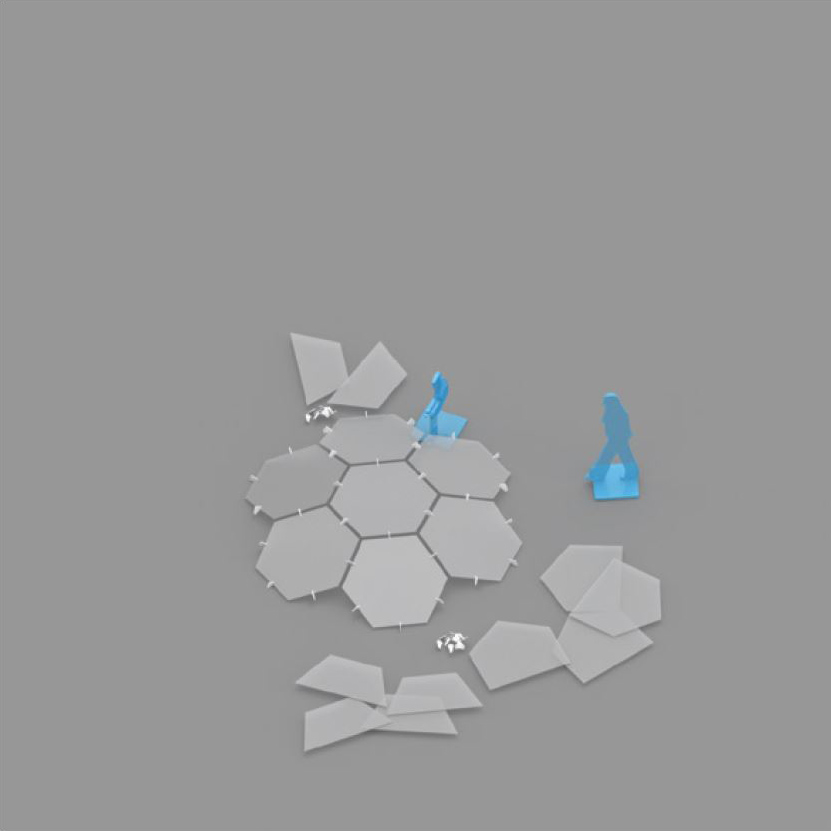

We make


Together with the office staff, we raised a “sound dome” to fashion an invisible room in the middle of the office.
Transducers mounted to the polycarbonate panels diffused a selection of ambient sound patterns,
producing a space beneath which masked conversations and provided an antidote to the cacophony of open office life.
